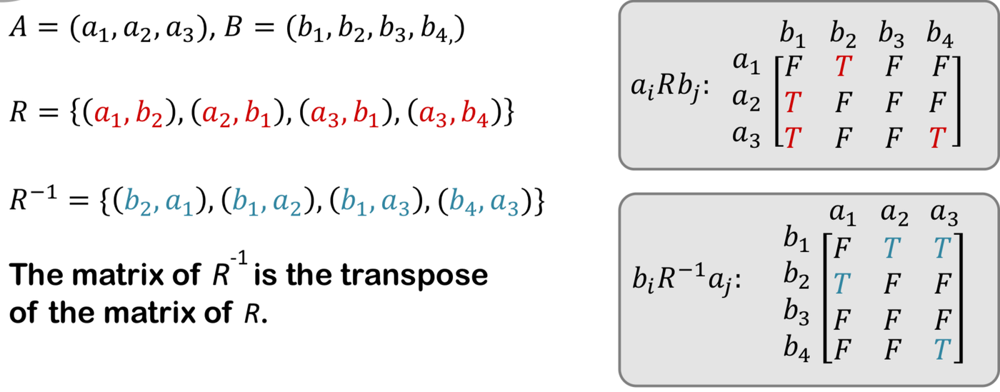
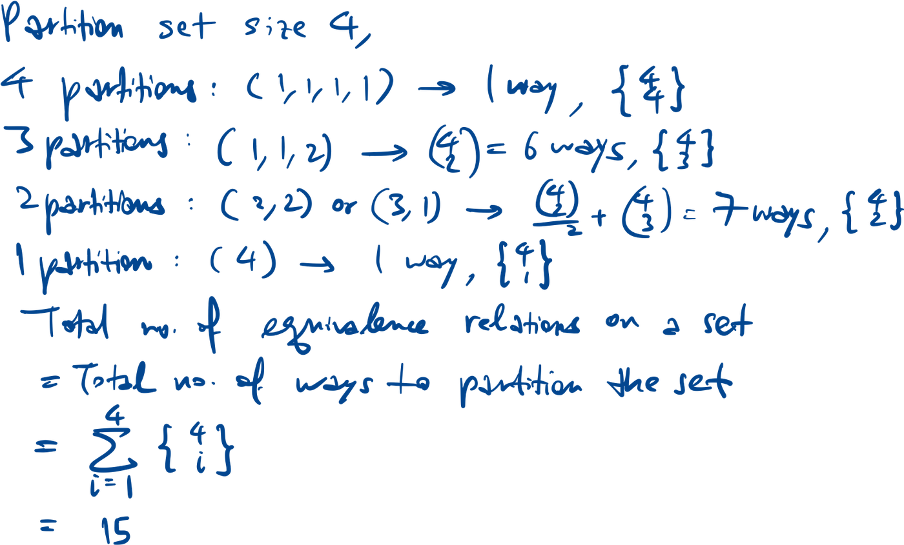
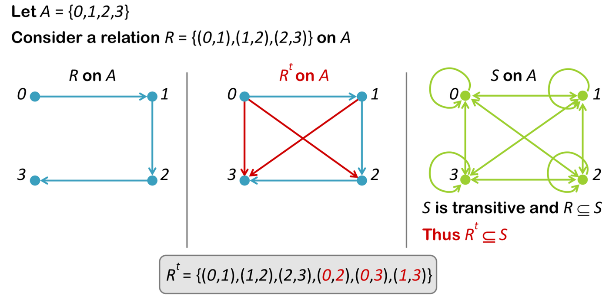

Matrix representation

Number of relations
Composition
Properties of relations
Between two distinct elements, either no arrow or bidirectional
arrow.
Between two distinct elements, no bidirectional arrow.
Equivalence relation
- Reflexive
- Symmetric
- Transitive
E.g. xRy ⇔ (x-y) is even.
Equivalence classes form a partition of A.
Number of equivalence classes on a set is the number of ways to
partition the set.
Example for set of size 4

Partial order
- Reflexive
- Antisymmetric
- Transitive
Transitive closure
For transitive closure Rt,
- Rt is transitive
- R ⊆ Rt
- Rt ⊆ S, if S is any other transitive relation that contains R.

Relational complement
Operations on relations